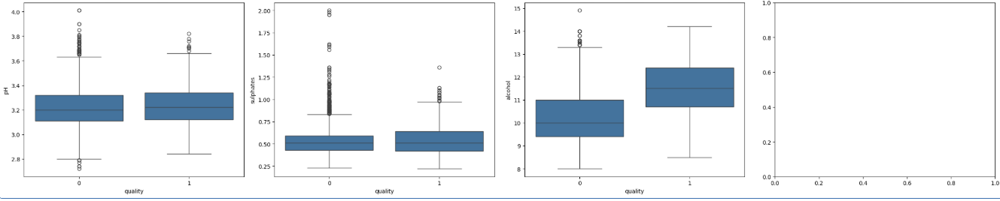
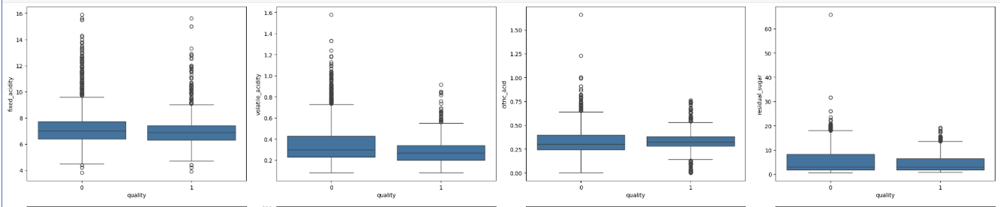
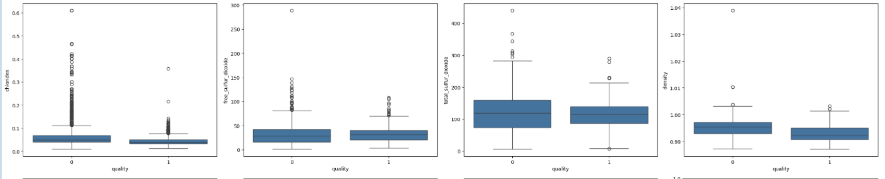

Predicción de Calidad del Vino Portugués
Desarrollo de un sistema de clasificación binaria para determinar la alta calidad del vino mediante el análisis de propiedades fisicoquímicas, implementado en un entorno distribuido con Databricks.
Objetivos del Proyecto
Analíticos
Identificar los factores químicos (alcohol, pH, sulfatos) que tienen mayor correlación con la percepción de calidad del vino.
Ingeniería
Construir un pipeline de MLOps que permita el registro, versionamiento y despliegue automático del mejor modelo.
Stack de Herramientas
Python (Pandas/Sklearn)
Databricks 15.4 LTS
MLflow Tracking
Apache Spark
1. Ingeniería y Preparación de Datos
El dataset proviene del repositorio UCI Machine Learning. Se combinaron datos de vinos blancos y tintos.
# Combinación de datasets y feature engineering
red_wine['is_red'] = 1
white_wine['is_red'] = 0
data = pd.concat([red_wine, white_wine], axis=0)
# Estandarización de nombres para evitar errores en Spark
data.rename(columns=lambda x: x.replace(' ', '_'), inplace=True)Se definió la variable objetivo "quality" como binaria: 1 (Alta Calidad ≥ 7) y 0 (Baja Calidad < 7).

2. Análisis Exploratorio de Datos (EDA)
¿Qué hace que un vino sea excepcional?
El Factor Alcohol
Los diagramas de caja revelaron que la mediana del nivel de alcohol en vinos de alta calidad supera el tercer cuartil de los vinos de baja calidad.
El Factor Densidad
Se observó una relación inversa: a menor densidad, mayor probabilidad de pertenecer a la categoría de alta calidad.


3. Modelado Base (Random Forest)
Como punto de partida, implementamos un Random Forest. Se utilizó un Wrapper personalizado para asegurar que las predicciones devolvieran probabilidades en lugar de solo etiquetas binarias.
class SklearnModelWrapper(mlflow.pyfunc.PythonModel):
def __init__(self, model):
self.model = model
def predict(self, context, model_input):
return self.model.predict_proba(model_input)[:,1] # Probabilidad de clase positivaResultado Base
AUC: 0.854
4. Optimización con XGBoost y Hyperopt
Para superar el rendimiento base, utilizamos XGBoost con búsqueda de hiperparámetros automatizada mediante Hyperopt y SparkTrials. Esto permitió ejecutar pruebas en paralelo a través de los nodos del clúster de Databricks.
Espacio de búsqueda:
- learning_rate: 0.01 - 1.0
- max_depth: 2 - 20
- reg_alpha: 0 - 1.0
Mejor configuración:
learning_rate: 0.1996, max_depth: 31, reg_alpha: 0.3032
Rendimiento Final Optimizado
0.904
Área Bajo la Curva (AUC)
5. Ciclo de Vida MLOps (MLflow)
Cada experimento fue registrado en el Model Registry, permitiendo una trazabilidad total:
Registro de Versión:
El modelo XGBoost fue registrado como 'V3' en el Workspace de Databricks.
Transición de Etapa:
El modelo fue promovido de 'None' a 'Production' tras superar las pruebas de validación en el conjunto de test.
6. Inferencia Distribuida
Capacidad de aplicar el modelo a petabytes de datos usando Spark UDF.
# Aplicación de inferencia escalable
import mlflow
pyfunc_udf = mlflow.pyfunc.spark_udf(spark, model_uri="models:/wine_quality/Production")
# Predicción sobre una tabla Delta
df_predictions = df_wine.withColumn("prediction", pyfunc_udf(*feature_columns))